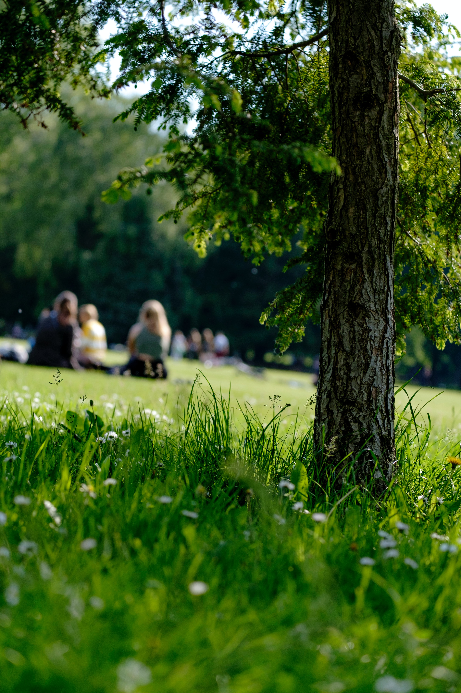

Enviromental Stewardship
Prioritize Environmental Policy
I believe that Hood River Valley Parks and Recreation District could be a leader in developing and maintaining a progressive vision for park development that balances the recreational needs of the community with responsible environmental stewardship of the public lands they manage.
However, Hood River Valley Parks and Recreation District’s website currently fails to mention the environment or being a good steward of the natural world even once.
The District’s mission statement reads in full:
“The mission of the Hood River Valley Parks + Recreation District is to provide recreational opportunities to the citizens of the Park District, with focus on the youth of our community. Facilities and programs will be developed and maintained to provide safe and economical recreational environments for all users.”
Protect the Land for Future Generations
Science and advocacy organizations such as UNICEF, WHO, and NIH all recognize that any focus on youth must include a parallel focus on developing and maintaining a focus on protecting their environment.
With record temperatures, erratic weather patterns, and yearly threats from drought and wildfire upon us, governmental agencies at every level should be shifting focus to protection and remediation of the environment.
Hood River Valley Parks and Recreation District has a track record of pursuing environmentally high impact recreational development that destroys agricultural land (Barrett) and wooded parkland (Golden Eagle Park), with no significant compensatory efforts at environmental remediation to offset the loss of trees and habitat.
We Can Do Better
As a neighbor to a property managed by the district (Barrett), I know firsthand how expediency and economics have taken precedence over following environmentally conscious practices observed by most professional park services.
Practices such as:
- Following recognized best practices - conservation, health and wellness, and social equity - in terms of park development and maintenance.
- Recycling leaves and debris appropriately.
- Educating maintenance employees as to proper disposal of waste.
And especially - Planting trees, including canopy trees, shrubs, and plants that support biodiversity and human wellbeing.
I believe the District needs to prioritize progressive environmental policy.
As a board member, I would insist on it.